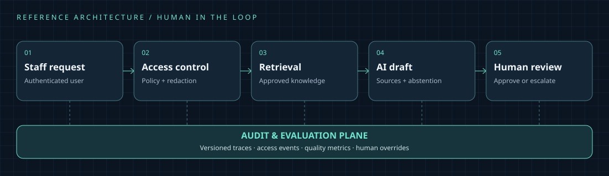

Intake assistant
Extract equipment condition notes and identify missing fields before staff approve a return.
Risk: incorrect extraction or overlooked damage.From ambiguous operational problems to evidence-informed product decisions. An interactive exploration of AI opportunities for independent equipment rental businesses.
Extract equipment condition notes and identify missing fields before staff approve a return.
Risk: incorrect extraction or overlooked damage.Estimate future equipment demand to support inventory allocation decisions.
Risk: sparse historical data and seasonal drift.Retrieve approved operating guidance and draft responses for staff review.
Risk: outdated instructions or unsupported advice.Adjust the relative importance of each criterion. Scores are normalized by total weight; Ratings are illustrative scenario inputs.
Explore a hypothetical staff-assistance deployment. Inputs are editable planning assumptions, not observed results.
Labor capacity released is not necessarily cash savings. Excludes taxes, discounting and additional overhead.
Reference architecture for a retrieval-assisted service desk. The system proposes responses; staff retain decision authority.

Role-scoped retrieval, approved documents, redaction and retention limits.
Versioned test cases, source support, abstention behavior and adversarial inputs.
Route unsupported or safety-sensitive requests to qualified staff. Disable AI assistance when controls fail.
Provides a framework for managing AI risk through Govern, Map, Measure and Manage functions.
Implication: define oversight and evaluation before deployment. Does not establish demand.
Primary referenceMarket research and competitive analysis help identify customers and understand competitors.
Implication: investigate existing rental workflows rather than assuming a market gap.
Primary referenceObjective advertising claims need a reasonable evidentiary basis.
Implication: avoid unsupported accuracy or savings claims.
Primary referenceThese references support general methodology and safeguards, not the illustrative ratings above.
Observe staff workflows and identify recurring friction. Test whether the problem is important enough to solve.
Evaluate a manual baseline alongside AI-assisted alternatives. Document assumptions and contradictory evidence.
Change direction if data access, operational safety or customer value cannot be demonstrated.
| Risk | Proposed control | Evaluation signal |
|---|---|---|
| Unsupported output | Staff approval and source references | Material error rate |
| Privacy exposure | Permissioned, minimized records | Access-control exceptions |
| Operational drift | Versioned evaluations and monitoring | Performance changes |
| Weak business value | Compare with manual workflow | Time saved and adoption |
Map tasks, interview staff, measure manual baseline.
Exit: documented problem and data access.Build a limited retrieval workflow and offline evaluation set.
Exit: reviewed test results and controls.Test with authorized staff; track errors, overrides and time.
Exit: evidence against agreed criteria.Compare baseline, cost, adoption and residual risks.
Exit: proceed, revise or stop.Require observed workflow friction and a measurable improvement against the existing process.
Confirm permissioned access, document coverage, repeatable evaluation and reliable fallback.
Require approved safety controls and a credible cost model. Escalate unresolved material risks before expanding.
The interactive model identifies a candidate for further discovery under a chosen set of assumptions. It does not authorize a launch. A defensible investment decision requires real customer evidence, permissioned data, independent evaluation and explicit acceptance criteria.
Explore my professional portfolio →